Bienvenido al manual operativo de JAH Sentinel, la plataforma avanzada de Gemelo Digital (Digital Twin) y AIOps (Inteligencia Artificial para Operaciones de TI). Este manual cubre todas las capacidades del sistema, basado en su diseño y flujos de trabajo profesionales[cite: 105, 106].
1. Conceptos Fundamentales
Antes de operar Sentinel, es vital comprender tres pilares esenciales del sistema:
- Digital Twin (Gemelo Digital): Sentinel no es solo una lista de equipos, es un mapa vivo. Todo activo físico (Sites, Torres, Routers) existe en una coordenada geográfica precisa y su color dinámico (Verde/Rojo) refleja su estado real de conectividad obtenido mediante pings e instrumentación SNMP[cite: 1].

- AIOps Integrado (Sentinel-Bot): En lugar de analizar densos logs en bruto cuando ocurre una anomalía, una Inteligencia Artificial local (Llama 3.2 1B [cite: 2]) analiza de forma continua la latencia, la pérdida de paquetes y el estado de los puertos físicos, generando un diagnóstico de triaje inmediato.
2. Tipos de Usuarios y Privilegios
El acceso a las funciones operativas y vistas de la Single Page Application está estrictamente controlado por el rol asignado a tu cuenta (RBAC [cite: 3]):
| Rol de Sistema | Capacidades Operativas | Restricciones de Código |
|---|---|---|
| TECNICO (Operador NOC) | Acceso en modo lectura al Mapa, Capas, Métricas e Inventario general. Interacción nativa con el Sentinel-Bot para interpretar diagnósticos. | No posee acceso ni visibilidad del panel CRUD ni de la gestión de usuarios corporativos. |
| SUPERVISOR / ADMIN | Hereda todas las funciones de lectura. Acceso total al gestor CRUD para altas/bajas de infraestructura física. Autoridad para autorizar flujos HITL. | Restringido para la edición, creación o eliminación de cuentas de usuarios administrativos. |
| SUPER_ADMIN | Control absoluto del sistema. Acceso completo a la consola de administración de identidades, reseteo de claves y auditoría global. | Ninguna restricción dentro del entorno. |
3. Navegación Principal (NavRail)
En el flanco izquierdo de la interfaz web se ubica la barra de navegación vertical o NavRail, la cual distribuye los módulos core del ecosistema:
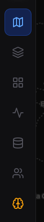
[navrail.png]
- Mapa: Conduce de manera directa al lienzo interactivo del Gemelo Digital principal.
- Capas: Despliega selectores gráficos para encender o apagar visualmente subredes lógicas (ej. DEDICADOS, CRISLINE).
- Nodos: Abre el inventario maestro estructurado en formato tabular de alta densidad.
- Métricas: Invoca el panel analítico StatsView que consolida el Uptime global, promedios de latencia y anchos de banda agregados.
- CRUD: Herramienta exclusiva de ingeniería para dar de alta, modificar o retirar componentes físicos de la topología.
- Usuarios: Panel de administración jerárquico para el control de cuentas del personal técnico.
- AIOps: Despliega la ventana flotante de conversación inteligente con el Sentinel-Bot.
4. Módulo: Gemelo Digital y Mapa (MapCanvas)
El MapCanvas representa el entorno primordial de control. Emplea un motor cartográfico GIS que procesa las variables de latitud y longitud de cada nodo de red.
Interpretación Visual de Estados:
- Iconografía Diferenciada: Los activos de red modifican su representation visual dependiendo de su tipo de hardware (ROUTER, ANTENA).
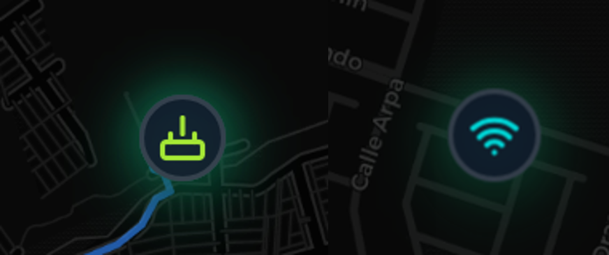
[Requiere: images/sentinel/figura-2.png]
-
🟢 Verde Resplandeciente (ONLINE): El canal telemétrico responde bajo condiciones ideales.
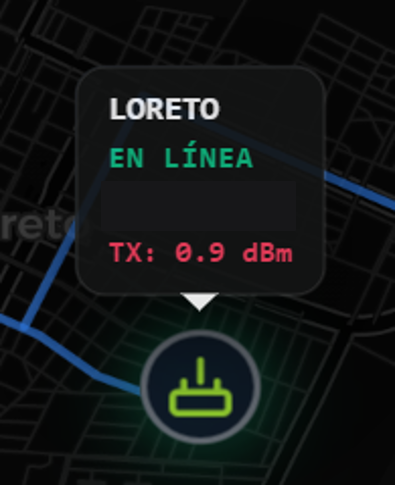
[node-online.png]
'"> -
🟠 Ámbar Pulsante (DEGRADED): Indica degradación de servicio (ej. alta latencia o pérdida intermitente de paquetes). Requiere atención inmediata.
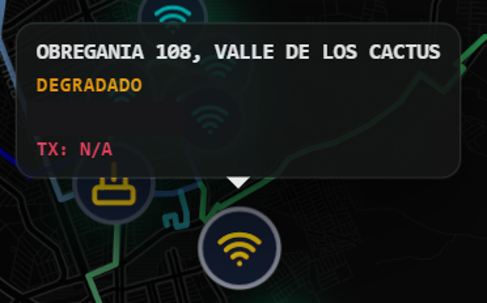
[node-degraded.png]
'"> -
🔴 Pulso Rojo (OFFLINE): Pérdida total de comunicación o caída crítica de energía.
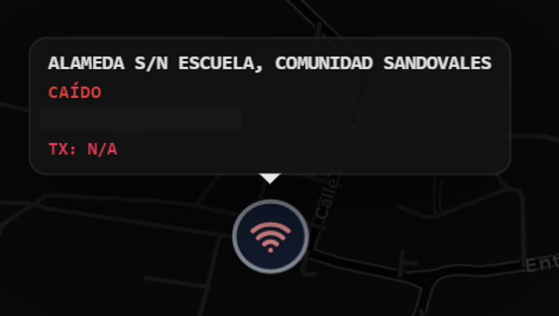
[node-offline.png]
'">
Capacidades de Interactividad:
Al efectuar un clic sobre cualquier element posicionado en el mapa, se expandirá de forma automática la ventana de propiedades avanzadas a la derecha de la interfaz. Este panel expone la dirección IP de gestión, Uptime operativo y gráficas en tiempo real de consumo de CPU o flujos de tráfico vía SNMP. Si la densidad de la topología satura visualmente el área de trabajo, utilice el menú de Capas para filtrar y ocultar los segmentos de red que no correspondan a su monitoreo del turno.

5. Módulo: Panel Overwatch (NOCRightPanel)
En la zona derecha de la pantalla reside el sistema unificado de alertas operativas del Centro de Operaciones de Red (NOC).
- Consola de alertas unificada: Este panel, ubicado en la zona derecha de la pantalla, funciona como el sistema nervioso del Centro de Operaciones de Red (NOC) para la gestión de incidencias.
- Monitoreo activo (Heartbeat): El sistema realiza auditorías automáticas sobre toda la infraestructura en ciclos constantes de 30 segundos; si un nodo no responde en dos ciclos, se marca como caído automáticamente.
- Identificación prioritaria: El panel muestra de forma inmediata una lista de "Nodos Caídos", permitiendo al operador visualizar rápidamente los equipos que han perdido conectividad.
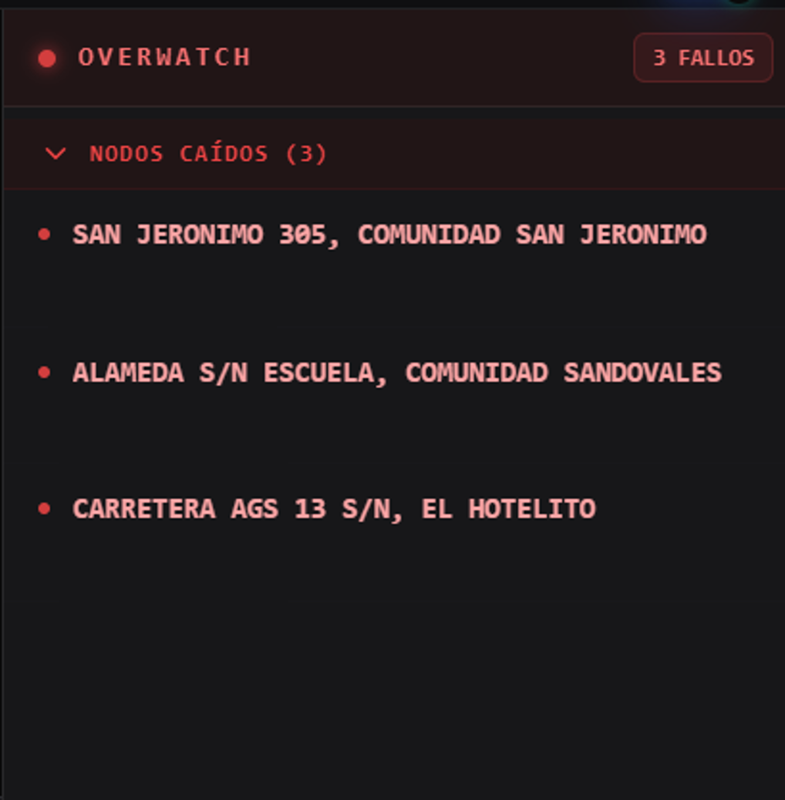
[Requiere: images/sentinel/figura-4.png]
'">6. Módulo: Gestión de Infraestructura (CRUDManager)
Módulo restringido por políticas de seguridad lógica únicamente para perfiles con rango de Supervisor y Administrador. Permite la edición estructural del Gemelo Digital.
Flujo para dar de Alta un Nuevo Nodo de Red:
-
1. Haz clic en el icono correspondiente a la Base de Datos (CRUD) situado en el NavRail izquierdo.
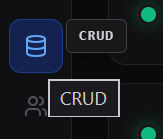
[crud-icon.png]
'"> -
2. Selecciona el comando azul destacado en la sección superior denominado + Nuevo Nodo.
[nuevo-nodo-btn.png]
'"> -
'">3. Complete los campos obligatorios del formulario estructurado NodesCRUD:
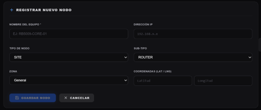
[form-full.png]
-
Nombre: Registre la nomenclatura interna normalizada (ej. OLT-NORTE-01).
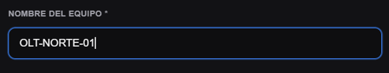
[form-nombre.png]
'"> -
IP: Dirección indispensable para el aprovisionamiento de las métricas SNMP y pings (ej. 192.168.10.5).
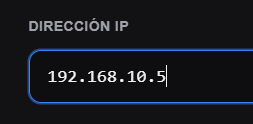
[form-ip.png]
'"> -
Tipo y Sub-tipo: Identifique si el objeto corresponde a una TORRE, SITE, DFO o EQUIPO, y configure su rol lógico (ROUTER, SWITCH).
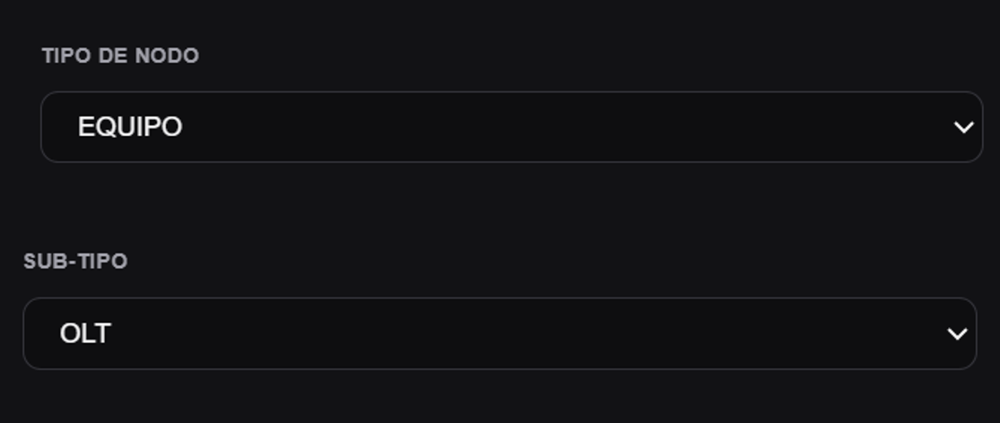
[form-tipo.png]
'"> -
Zona y Coordenadas: Ingrese latitud y longitud. Este parámetro es estrictamente requerido para su posicionamiento en el mapa.
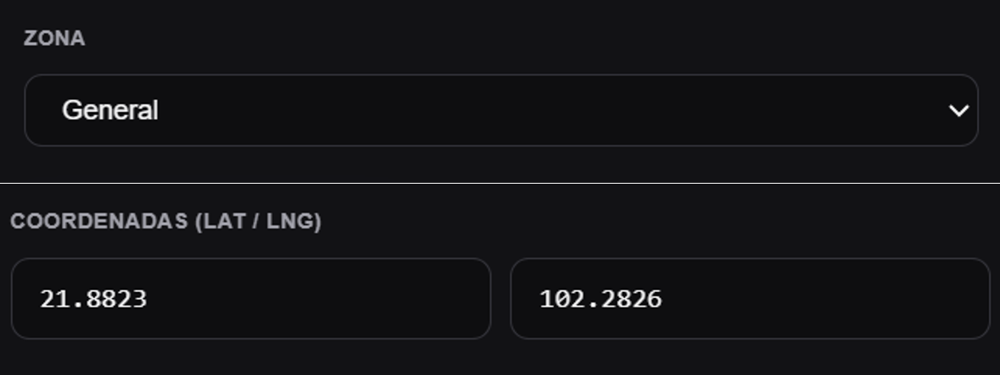
[form-zona.png]
'">
-
-
4. Haz clic en Guardar Nodo. El servidor backend procesará la persistencia e informará inmediatamente a través de un canal de WebSocket [cite: 4] a todas las consolas web activas, renderizando el nodo sin requerir refrescar la página.
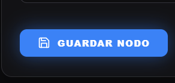
[guardar-nodo-btn.png]
'">
Modificación y Remoción de Activos:
El sistema incorpora dos controles directos: el icono del Lápiz (Pencil) enfocado en la corrección de metadatos o relocalización geográfica del hardware; y el icono de la Papelera (Trash), el cual remueve permanentemente el dispositivo y desestructura sus dependencias topológicas de fibra óptica en cascada. Este último requiere confirmación de seguridad doble y deja registro indeleble en la bitácora de auditoría de red (TopologyAuditLog).
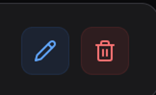
[Requiere: images/sentinel/figura-5.png]
'">7. Módulo: Inteligencia Artificial (Sentinel Chat)
Más allá de los reportes automatizados ante caídas de infraestructura, JAH Sentinel provee un asistente interactivo en lenguaje natural mediante el componente ChatManager.
- Acceso: Se invoca mediante el icono de cerebro amarillo ubicado en el NavRail.
- Consultas Contextuales: Los operadores pueden interactuar mediante lenguaje natural libre. Ejemplos de uso:
-
"¿Cuál es el estado del nodo TEPOZAN?"

-
"¿Cuál es el estado general de la red?"
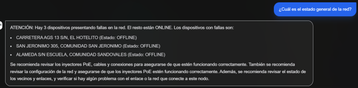
[chat-general.png]
'">
-
El asistente parsea la solicitud, cruza los datos con la base de métricas en vivo y genera una respuesta inteligible. Las sesiones y el hilo de la conversación se guardan de manera temporal dentro del estado global de la sesión operativa.
8. Módulo: Gestión de Usuarios (UserManagementView)
Esta consola central de seguridad informática está estrictamente reservada para el rol de Super Administrador.
Visualizado a través del icono de múltiples usuarios en el NavRail, centraliza el padrón de operadores de la plataforma. Permite el alta estructurada de personal, asignación confidencial de contraseñas de primer ingreso y la administración del esquema de privilegios (TECNICO, SUPERVISOR, SUPER_ADMIN). Asimismo, integra capacidades de contingencia para forzar la expiración inmediata de llaves de acceso en caso de pérdida o compromiso de las credenciales de un operador.
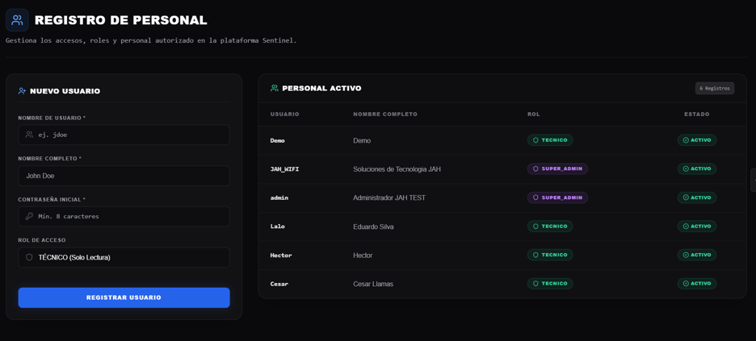
[Requiere: images/sentinel/figura-6.png]
'">9. Módulo: Métricas de Red (StatsView)
Ubicado en el ícono de "Actividad" (ondas de pulso) en el NavRail. Este panel proporciona un resumen gerencial del rendimiento global.
- KPIs Principales: Monitorea en vivo el Uptime Global (porcentaje de nodos en línea), la Latencia Promedio general de la red, y el tráfico agregado Upstream/Downstream en Gbps.
- Estado por Zona Operativa: Gráficos de barras que muestran la disponibilidad porcentual de cada zona configurada utilizando semáforos: Verde (>90%), Ámbar (>70%), y Rojo (<70%).
- Concentración de Carga (Radial Metrics): Gráficos circulares que exhiben el Top 3 de zonas operativas respecto a su densidad de infraestructura física instalada (nodos operacionales vs total).
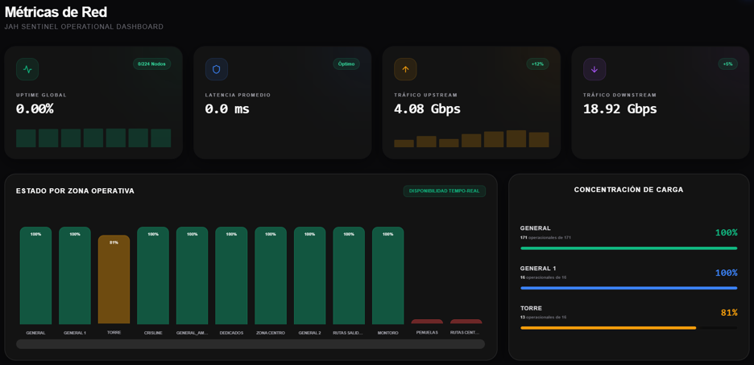
[Requiere: images/sentinel/figura-7.png]
'">10. Módulo: Edición Topológica Avanzada
Acceso exclusivo para Supervisores y Administradores. El Gemelo Digital no solo ubica nodos, sino que dibuja y modela de forma interactiva las rutas de fibra óptica o radioenlaces.
- Trazado de Rutas: Al activar el modo edición, se genera una línea interactiva en el mapa. Se hace clic en el nodo origen y se traza hasta el destino para consolidar una "Conexión". Esto permite al motor AIOps realizar el análisis de impacto y fallos en cadena.
- Atajos de Teclado Profesionales:
Ctrl + Z: Deshacer la última ruta trazada (Undo).Ctrl + Y: Rehacer la última acción cancelada (Redo).

11. Módulo: Rack View (Vista de Gabinete)
Para aquellos activos tipificados estrictamente como SITE, la tarjeta lateral habilita el acceso a la pestaña Rack View, una abstracción física hiperrealista del gabinete.
- Estructura Estándar de 42U: Despliega un bastidor de 42 Unidades de Rack de altura.
- Drag and Drop (Arrastrar y Soltar): Permite tomar los equipos "huérfanos" (dispositivos asignados al sitio pero sin posición física definida) desde el inventario inferior, arrastrarlos y alojarlos exactamente en la Unidad de Rack (U) donde se encuentran atornillados.
- Prevención de Colisiones: El sistema cuenta con validación de volumen físico; impide superponer hardware o ubicar un switch de 2U en un espacio disponible de 1U.
- Auto-Acomodar (AIOps): Optimiza el tiempo de organización mediante un algoritmo inteligente que distribuye los equipos sueltos de forma lógica en los espacios vacíos del bastidor.
- Inspección Profunda:
- Puertos y ODFs: Al hacer clic en un equipo del rack, se renderiza su vista frontal (Faceplate) mostrando el estado de sus puertos SFP/Ethernet: Verdes (Libres), Azules (En Uso), y Rojos (Caídos / Alarma).
- Telemetría SNMP Dedicada: Al seleccionar el icono de señal del hardware rackeado, se abre un sub-panel con variables analíticas síncronas: Carga de CPU, Temperatura, Voltaje, Memoria Usada y gráficas individuales de tráfico RX/TX.
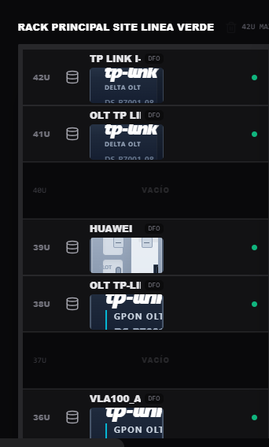
[Requiere: images/sentinel/figura-9a.png]
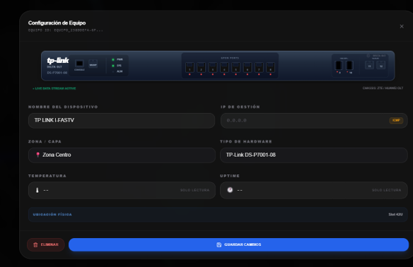
[Requiere: images/sentinel/figura-9b.png]
Glosario y Referencias Técnicas
- [1] SNMP (Simple Network Management Protocol): Protocolo de la capa de aplicación estandarizado para la monitorización e intercambio de variables de estado entre elementos de red.
- [2] Llama 3.2 1B: Modelo fundacional de procesamiento de lenguaje natural de gran escala, optimizado para inferencia en local con baja latencia sin envío de datos confidenciales a infraestructuras en la nube.
- [3] RBAC (Role-Based Access Control): Mecanismo de seguridad lógica que regula y restringe las operaciones del software en función del rol de identidad verificado del usuario.
- [4] WebSocket: Protocolo de comunicaciones bidireccional y persistente sobre una única conexión TCP, diseñado para la transmisión de payloads de eventos y telemetría en tiempo real.
II. JAH-NOC
Centralización Operativa del Centro de Operaciones de Red
Introducción a JAH-NOC
El Sistema JAH-NOC es una plataforma web avanzada diseñada para centralizar y simplificar de manera drástica las operaciones del Centro de Operaciones de Red, permitiendo realizar de forma rápida y eficiente tareas que anteriormente requerían acceso directo a múltiples routers.
1. Apartado de Redireccionamiento (Desvíos Marcatel)
Este módulo permite gestionar la adición o remoción de direcciones IP de clientes dentro de las listas de desvío Marcatel configuradas en los enrutadores lógicos.
Acceso en la interfaz: Menú principal › Redirecciones.
Flujo para Agregar una Redirección:
- Despliegue el campo Router MikroTik y seleccione el equipo donde se encuentra conectado el cliente.
- En el campo Dirección IP del Cliente, digite la IP correspondiente (ej.
10.1.2.251). - Haga clic en el botón azul centralizado Ejecutar Redirección.
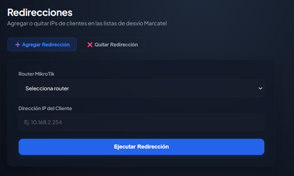
[Requiere: images/noc/form-redireccion.png]
'">Flujo para Quitar una Redirección:

- En la cabecera del módulo, presione el botón rojo ✖ Quitar Redirección.
- Seleccione el router MikroTik correspondiente y capture la IP que desea dar de baja.
- Presione el botón inferior Quitar Redirección. La IP será eliminada de la lista de desvío y volverá a utilizar su ruta normal de navegación.
2. Módulo de Revisión y Escaneo de Clientes (ARP/Mora)
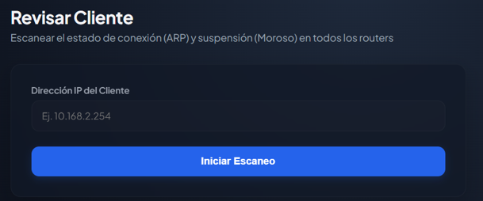
[Requiere: images/noc/form-escaneo.png]
'">Diseñado para escanear en tiempo real el estado de conexión (tabla ARP) y la suspensión por falta de pago (Morosos) en todos los routers de la red de manera simultánea.
Ruta de acceso: Menú principal › Escaneo de Clientes.
Flujo de Diagnóstico Rápido:
Introduzca la dirección IP del abonado a verificar y haga clic en el comando Iniciar Escaneo. Una vez finalizado el barrido telemétrico, el sistema devolverá un indicador gráfico semaforizado con uno de los siguientes estados:
| Indicador Gráfico | Estado Devuelto | Significado Técnico e Implicación | Acción Recomendada |
|---|---|---|---|
| 🟢 VERDE | En Línea | El cliente se encuentra conectado y operando correctamente dentro de la red. | Ninguna. Operación normal. |
| 🟡 AMARILLO | Fuera de Red | El cliente no presenta adeudos, pero actualmente no existe conectividad detectada. Causas: Equipo apagado, desconectado o problemas de señal. | Verificar el equipo del cliente y revisar la conectividad física en campo. |
| 🔴 ROJO | Falta de Pago | El cliente presenta un adeudo pendiente y su servicio se encuentra suspendido. | Solicitar al cliente regularizar su pago ante la administración. |
III. JAH Central
Plataforma Central de Gestión, Monitoreo y Administración de Servicios
Manual de Usuario JAH Central
Versión 1.0 | Suite Integral de Inventarios, Herramientas e Instalaciones
JAH Central centraliza el control operativo de almacenes, herramientas asignadas a cuadrillas técnicas, progreso de órdenes de instalación domiciliarias y métricas comerciales de desempeño en un único panel unificado.
1. Dashboard Analítico
Es la pantalla raíz al ingresar al sistema. Permite conocer rápidamente la situación actual del inventario general y las operaciones sin necesidad de revisar cada módulo de forma individual.
Componentes e Indicadores Principales:
- Métricas de Control Superior: Conteo de Equipos Asignados a técnicos, Equipos actualmente En Uso en campo y existencias totales Disponibles en tu CRM.
- Gráficos Consolidados: Despliega el Estado General de stock, los Equipos Disponibles por Tipo de modelo (ej. Huawei EG8145V5, Router TP-Link 840), Estado de Instalaciones y barra de Materiales en uso por técnico.

2. Asignación de Equipos y Consumo de Material
Módulo enfocado en registrar la entrega física de hardware y consumibles a las cuadrillas de planta externa.

Asignar Equipos (ONUs/Routers):
- La fecha se estampa de forma automática por el sistema.
- Seleccione el Técnico receptor en el menú desplegable.
- Indique el Tipo de Equipo e ingrese de forma manual el Número de Serie único.
- Seleccione la Condición del Equipo (Nuevo o Usado) y presione Guardar. Quedará asignado automáticamente.
Registrar Consumo de Material:
- Seleccione el Técnico e identifique el consumible/material entregado.
- Capture en el campo de texto la Cantidad consumida (ej. 2 cajas, 5 metros).
- Haga clic en Guardar para descontar las unidades del almacén.
3. Gestión de Inventario
Acceso: Menú lateral › Gestión de Inventario. Actúa como la bitácora maestra de auditoría de hardware y consumibles del ecosistema, permitiendo consultar estados de stock y realizar modificaciones directas.
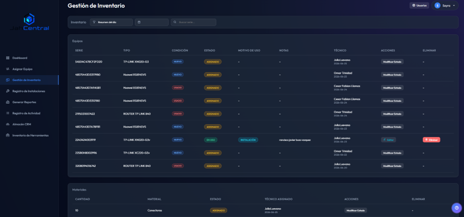
[Requiere: images/central/inventario.png]
'">Acciones Soportadas por Registro:
- Modificar Estado: Transiciona un hardware de stock entre los estados de Asignado y En Uso.
- Motivo de Uso & Notas: Permite asignar un motivo de uso específico a cada equipo y editar el campo para ingresar anotaciones aclaratorias.
- Eliminar: Purga permanentemente registros cuando sea necesario por corrección.
Filtros superiores integrados: Barra de herramientas para buscar de forma rápida por Número de serie, Fecha exacta o Estado de equipo.
4. Registro de Instalaciones
Gestiona el flujo documental y técnico de las órdenes de trabajo de campo para altas domiciliarias.
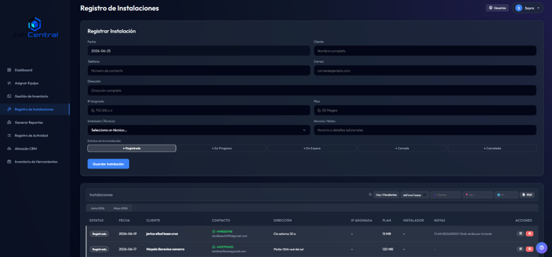
[Requiere: images/central/instalaciones.png]
'">Parámetros requeridos para registrar una instalación:
- Fecha y Nombre completo del cliente
- Teléfono de contacto y Correo electrónico
- Dirección de instalación completa
- Dirección IP Asignada
- Plan contratado (ej. 50 Megas)
- Técnico instalador asignado
- Horario e información/notas adicionales
Después, seleccione el Estatus de la Instalación, pudiendo elegir entre: Registrada, En Progreso, En Espera, Cerrada o Cancelada. Finalmente presione Guardar Instalación para desplegarla en el listado inferior, donde podrá editar datos o generar un reporte en formato PDF.
5. Generación de Reportes Gerenciales
Ubicación: Menú lateral › Generar Reportes. Centraliza los indicadores para la toma de decisiones directivas e informes mensuales de productividad.

Pasos para la Generación:
- Seleccione la opción de periodo o rango cronológico que desea consultar.
- Haga clic en el comando Generar Reporte.
Los reportes compilarán gráficos automáticos de: Desempeño y rendimiento por técnico (actividad de equipos e instalaciones), Motivos de uso del hardware, Material total consumido e Instalaciones realizadas con opción de impresión directa o descarga a PDF.
6. Registro de Actividad (Auditoría)
Ruta: Menú lateral › Registro de Actividad. Almacena de forma automatizada y cronológica todas las acciones realizadas dentro del sistema JAH Central.
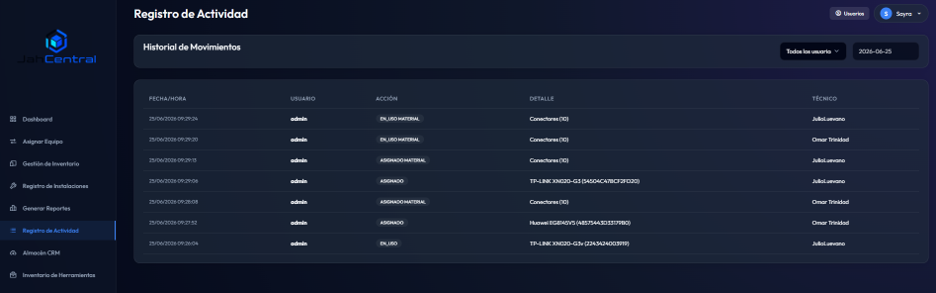
[Requiere: images/central/actividad.png]
'">Ante auditorías de inventario, el administrador podrá consultar en esta tabla:
- Fecha y Hora del movimiento.
- Usuario operador que ejecutó el cambio (ej.
admin). - Acción realizada (ej.
ASSIGNED_MATERIAL,EN_USE). - Detalle del movimiento (ej. Conectores (10)) junto al Técnico relacionado.
7. Almacén CRM e Inventario de Herramientas
7.1 Almacén CRM:
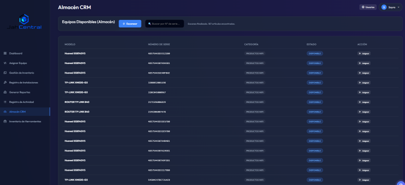
[Requiere: images/central/almacen-crm.png]
'">Módulo de comunicación en tiempo real con las existencias de hardware del CRM de la compañía. Al ingresar al apartado, haga clic en Escanear y espere un par de segundos a que recolecte los números de serie registrados en stock. Si lo requiere, puede buscar un número de serie específico y dar clic en Asignar para ser redirigido de forma automática al módulo de asignación.
7.2 Inventario de Herramientas (Checklist por Técnico):
Permite supervisar el kit de herramientas de trabajo asignado a cada cuadrilla en planta externa. Al seleccionar a uno de los técnicos del panel izquierdo, la interfaz mostrará el listado completo de herramientas entregadas y verificadas, la cantidad asignada y el porcentaje de Avance del checklist. Incluye controles rápidos para modificar la información o compilar el inventario técnico en un formato **PDF** por cuadrilla o vehículo.
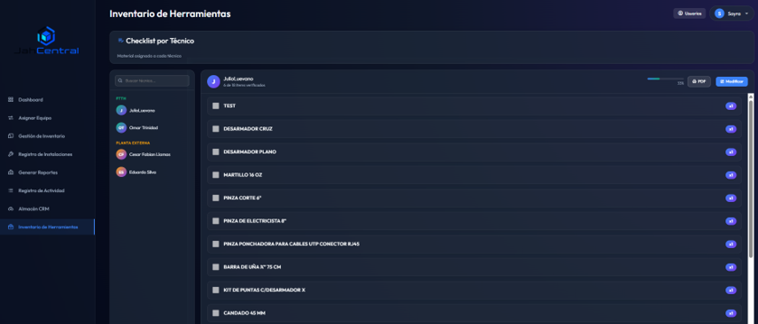
[Requiere: images/central/herramientas.png]
'">IV. JahPayControl
Control de Morosidad y Mensajería Automática
JahPayControl: Manual de Usuario
Versión 1.0 | Uso interno — Confidencial
1. Dashboard — Panel de Morosos
Es la pantalla principal al ingresar al sistema. Presenta un resumen visual del estado de cobranza y acceso rápido a acciones sobre cada cliente.
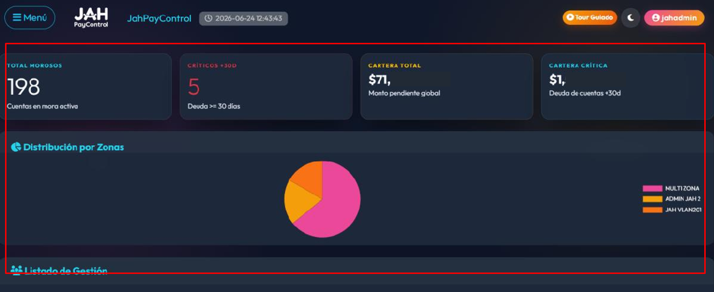
[Requiere: images/paycontrol/figura-1-1.png]
'">1.1 Tabla de Clientes Morosos
Columnas disponibles: ID, Nombre, Zona, Días de Mora, Monto, Estado.
Botones de acción por cliente:
- Ver notas — historial de observaciones del cliente.
- Bloquear servicio — suspende el acceso a internet.
- Ping ONT — diagnóstico de conectividad vía MikroTik.
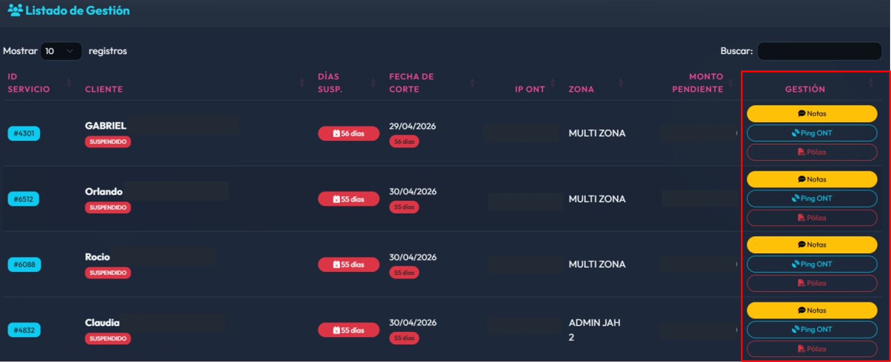
[Requiere: images/paycontrol/figura-1-2-funciones.png]
'">1.2 Filtros Disponibles
- Por zona de servicio.
- Por días de mora.
- Por estado: Suspendido o Cortado.
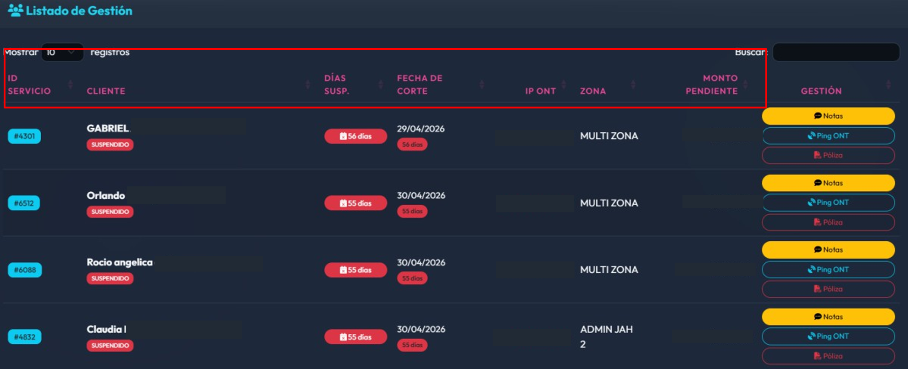
[Requiere: images/paycontrol/figura-1-2-filtros.png]
'">1.3 Sincronización con WispHub
Hacer clic en el botón Sincronizar con WispHub para importar los datos más recientes desde el CRM.
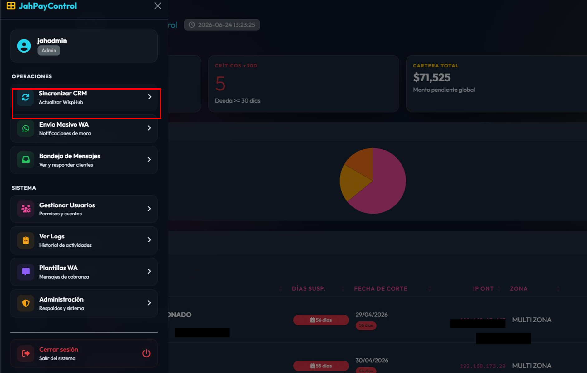
[Requiere: images/paycontrol/figura-1-3.png]
'">2. Gestión de Clientes Morosos
2.1 Agregar Nota a un Cliente
- En la tabla, hacer clic en el ícono de comentario del cliente.
- Escribir la observación en el campo de texto.
- Hacer clic en Guardar Nota.
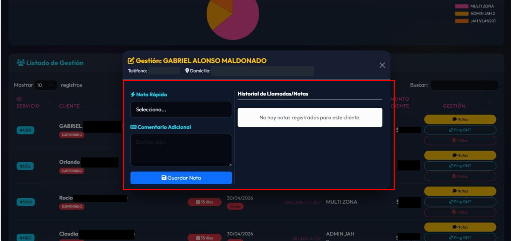
[Requiere: images/paycontrol/figura-2-1.png]
'">2.2 Diagnóstico de Conectividad (Ping a ONT)
- Hacer clic en el ícono de diagnóstico del cliente.
- El sistema ejecuta un ping al equipo via MikroTik.
- Se muestra el resultado: En línea / Sin respuesta.
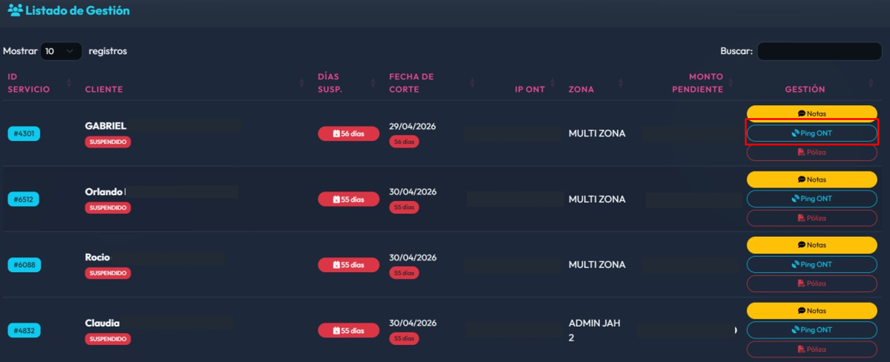
[Requiere: images/paycontrol/figura-2-2.png]
'">3. Envío Masivo de WhatsApp
Acceso: Menú principal › Envío Masivo WhatsApp
Permite notificar a múltiples clientes morosos de forma automatizada. Siga los cuatro pasos en orden.
Paso 1 — Conectar WhatsApp
- Si aparece el indicador Sin Conexión WA, hacer clic en Conectar.
- Esperar a que aparezca el código QR.
- En el teléfono: abrir WhatsApp › Configuración › Dispositivos Vinculados.
- Tocar Vincular Dispositivo y escanear el QR.
- Esperar confirmación: "WhatsApp Conectado y Listo".
[Requiere: images/paycontrol/figura-3-2.png]
'">Paso 2 — Seleccionar Destinatarios
- En la tabla de la derecha, marcar los clientes a notificar.
- Usar los botones de selección rápida:
- Todos — selecciona toda la lista.
- No enviados hoy — excluye clientes ya contactados.
- Ninguno — limpia la selección.
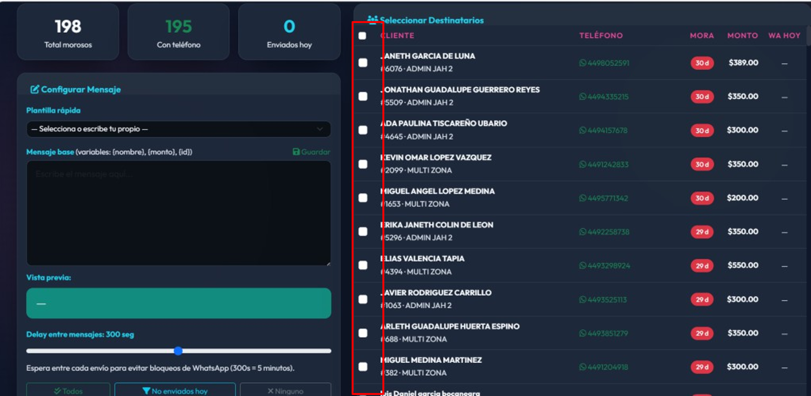
[Requiere: images/paycontrol/figura-3-3.png]
'">Paso 3 — Configurar el Mensaje
- Seleccionar una plantilla del menú desplegable o redactar un mensaje personalizado.
- Usar variables dinámicas para personalizar el texto.
- La vista previa del mensaje se actualiza en tiempo real.
- Ajustar el Delay entre mensajes.
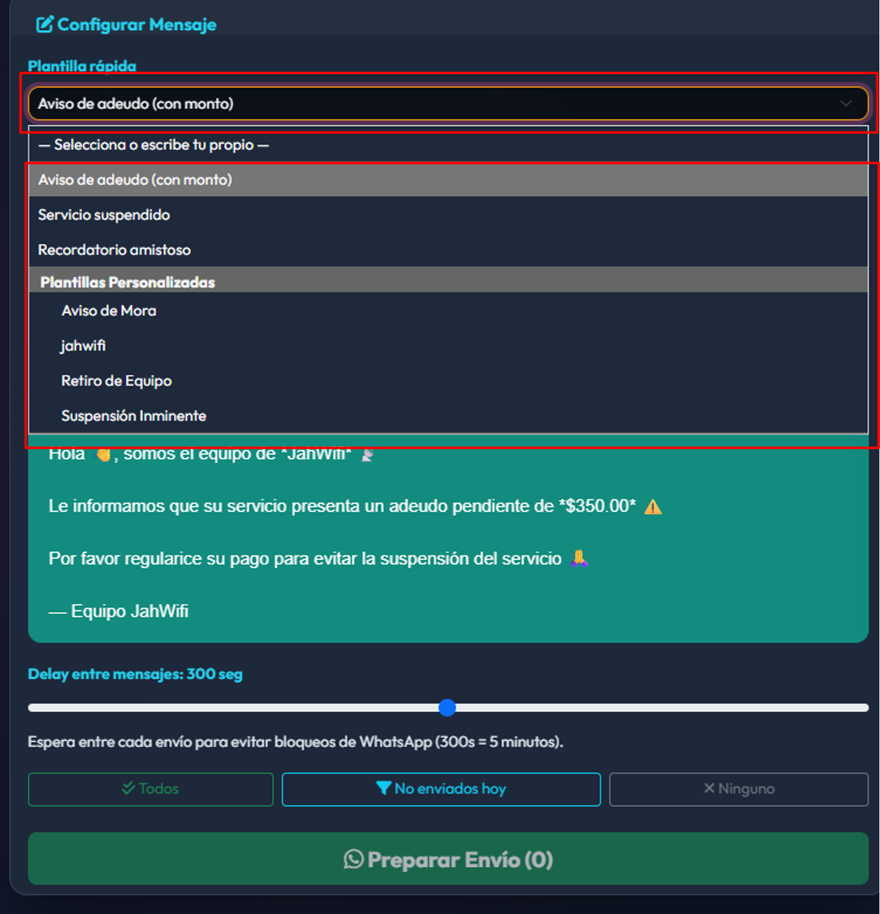
[Requiere: images/paycontrol/figura-3-4.png]
'">Paso 4 — Enviar
- Hacer clic en Preparar Envío.
- Revisar y editar mensajes individuales si es necesario.
- Hacer clic en Confirmar y Enviar.
- Monitorear el progreso en el panel de Resultados.
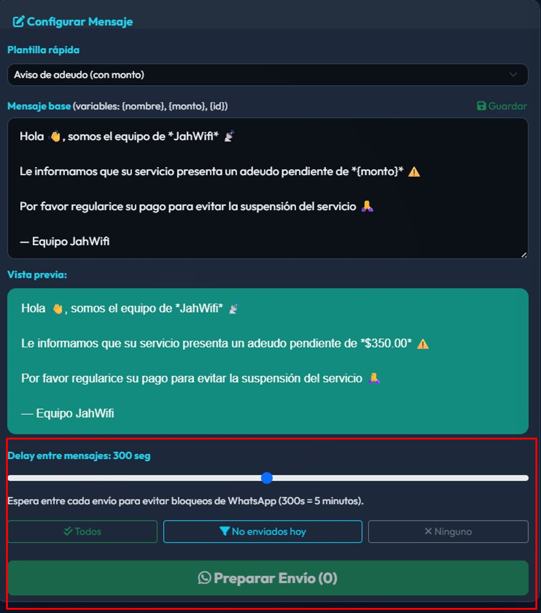
[Requiere: images/paycontrol/figura-3-5.png]
'">[Requiere: images/paycontrol/figura-3-6.png]
'">4. Plantillas de Mensajes
Acceso: Menú principal › Plantillas WA
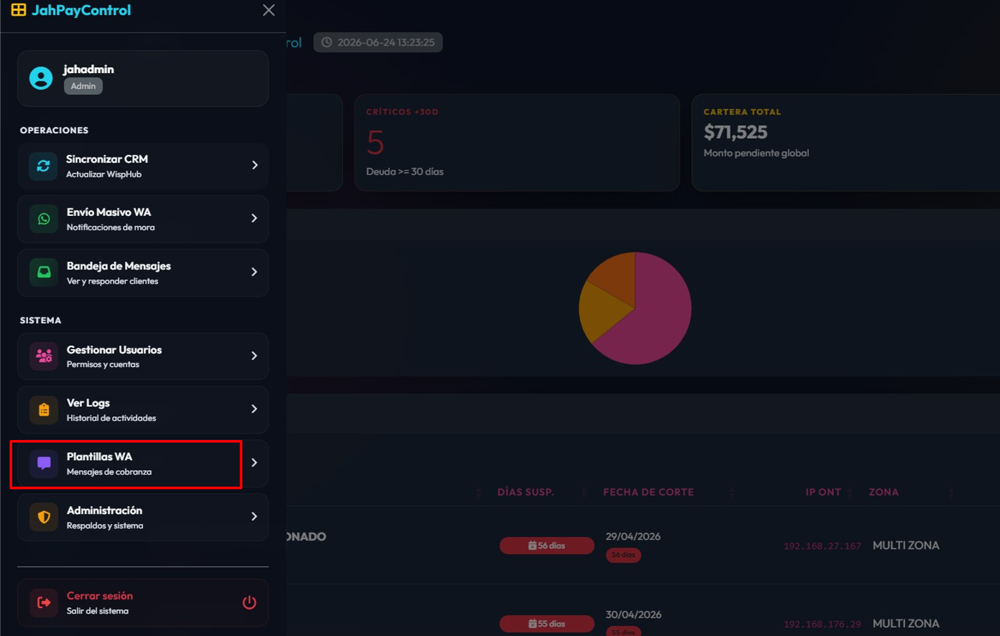
[Requiere: images/paycontrol/figura-4-0.png]
'">4.1 Crear Nueva Plantilla
- Hacer clic en Nueva Plantilla.
- Ingresar el nombre de la plantilla.
- Redactar el contenido del mensaje.
- Usar variables disponibles:
{nombre},{monto},{dias},{zona},{id}. - Para texto en negritas en WhatsApp, escribir
*texto*. - Hacer clic en Guardar Plantilla.
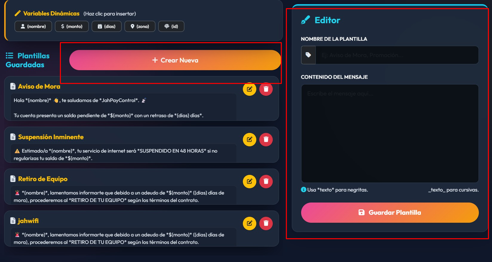
[Requiere: images/paycontrol/figura-4-1.png]
'">4.2 Editar Plantilla Existente
- Localizar la plantilla en la lista.
- Hacer clic en el ícono de lápiz.
- Modificar nombre o contenido.
- Guardar cambios.
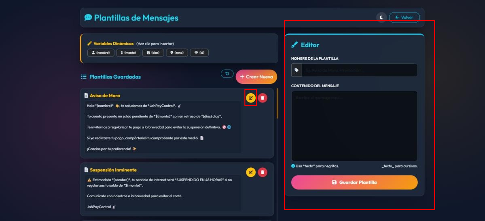
[Requiere: images/paycontrol/figura-4-2.png]
'">5. Bandeja de WhatsApp
Acceso: Menú principal › Bandeja
Permite gestionar conversaciones entrantes de clientes directamente desde el sistema.
5.1 Funciones Disponibles
- Ver conversaciones de clientes en tiempo real.
- Buscar contacto por nombre o número de teléfono.
- Filtrar mensajes: Todos / No Leídos.
- Responder mensajes directamente desde la interfaz.
- Usar plantillas de respuesta rápida (ícono de rayo ⚡).
- Recibir notificaciones de nuevos mensajes con sonido.
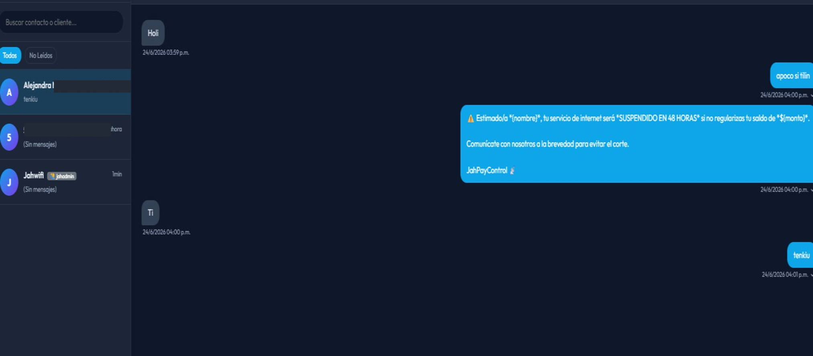
[Requiere: images/paycontrol/figura-5-1.png]
'">6. Gestión de Usuarios
Acceso: Menú principal › Usuarios — (solo Administradores)
6.1 Crear Usuario
- Completar los campos: Usuario, Contraseña, Nombre completo, Rol.
- Hacer clic en Crear Usuario.
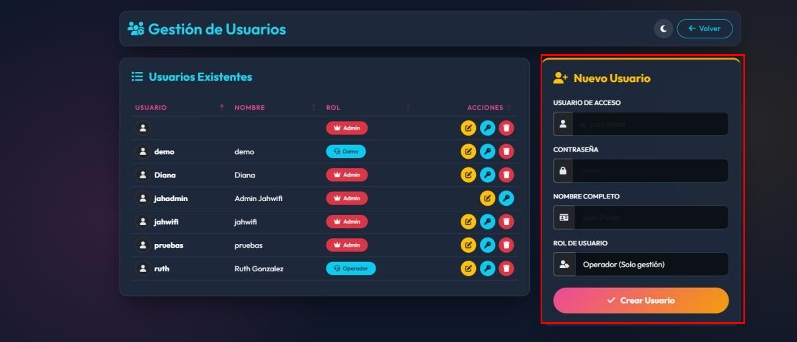
[Requiere: images/paycontrol/figura-6-1.png]
'">6.2 Editar Usuario
- En la tabla de usuarios, hacer clic en el ícono de lápiz.
- Modificar nombre o rol.
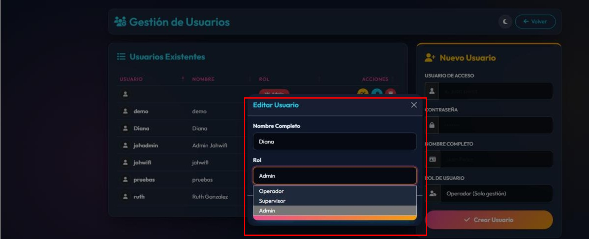
[Requiere: images/paycontrol/figura-6-2.png]
'">6.3 Cambiar Contraseña
- Hacer clic en el ícono de llave del usuario.
- Escribir la nueva contraseña.
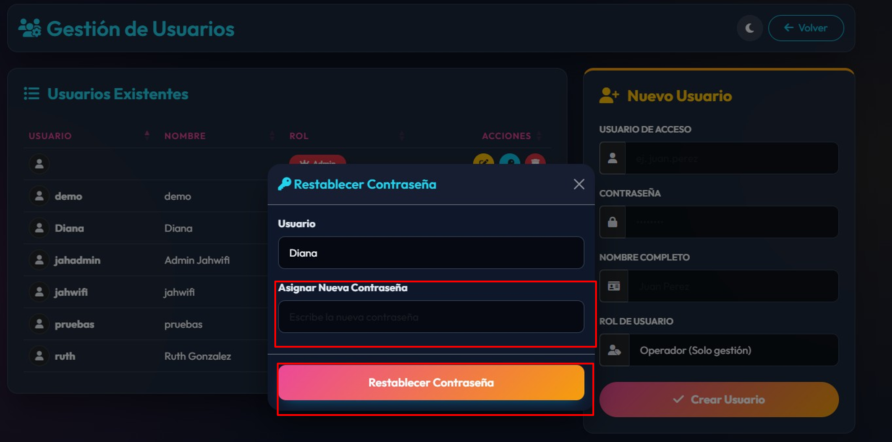
[Requiere: images/paycontrol/figura-6-3.png]
'">7. Panel de Administración
Acceso: Menú principal › Administración — (solo Administradores)
7.1 Estado de la Base de Datos
Muestra métricas clave del sistema:
- Tablas de la base de datos.
- Total de morosos registrados.
- Usuarios activos.
- Mensajes en cola de WhatsApp.
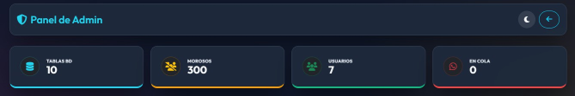
[Requiere: images/paycontrol/figura-7-1.png]
'">7.2 Respaldo de Base de Datos
- Hacer clic en Descargar Respaldo SQL.
- Se descarga un archivo .sql con todos los datos del sistema.
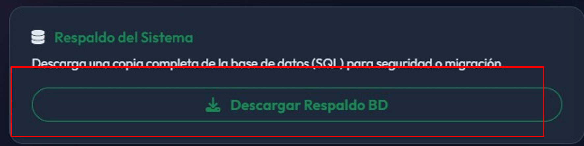
[Requiere: images/paycontrol/figura-7-2.png]
'">7.3 Configuración de CRM
| Método | Descripción |
|---|---|
| WispHub (Automático) | Sincronización vía API. Requiere URL and API Key. |
| CSV Manual | Carga manual de archivo exportado desde cualquier CRM. |
| Webhook | Integración por eventos en tiempo real. |
Para WispHub: ingresar URL de API y API Key, luego usar Probar Conexión para validar antes de Guardar Cambios.
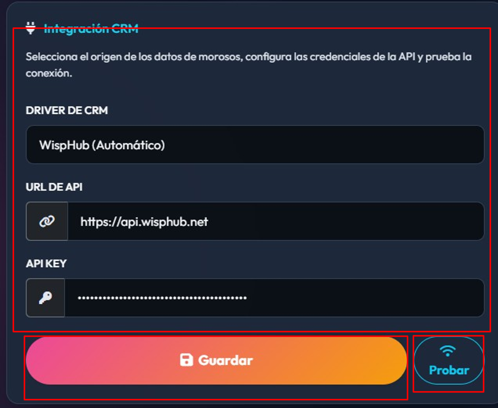
[Requiere: images/paycontrol/figura-7-3.png]
'">7.4 Importar CSV
- Subir el archivo .csv exportado del CRM.
- Seleccionar el modo de importación:
- Agregar/actualizar — suma registros nuevos y actualiza existentes.
- Reemplazar lista completa — sustituye todos los datos actuales.
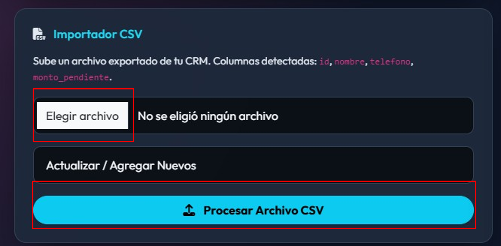
[Requiere: images/paycontrol/figura-7-4.png]
'">7.5 Cola de Mensajes WhatsApp
Muestra el estado de los últimos 10 mensajes procesados:
- Pendientes — en espera de envío.
- Enviados — entregados correctamente.
- Errores — fallidos; revisar conexión de WhatsApp.
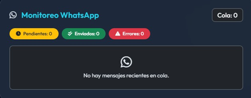
[Requiere: images/paycontrol/figura-7-5.png]
'">8. Logs del Sistema
Acceso: Menú principal › Logs
Registro cronológico de todas las acciones realizadas en el sistema.
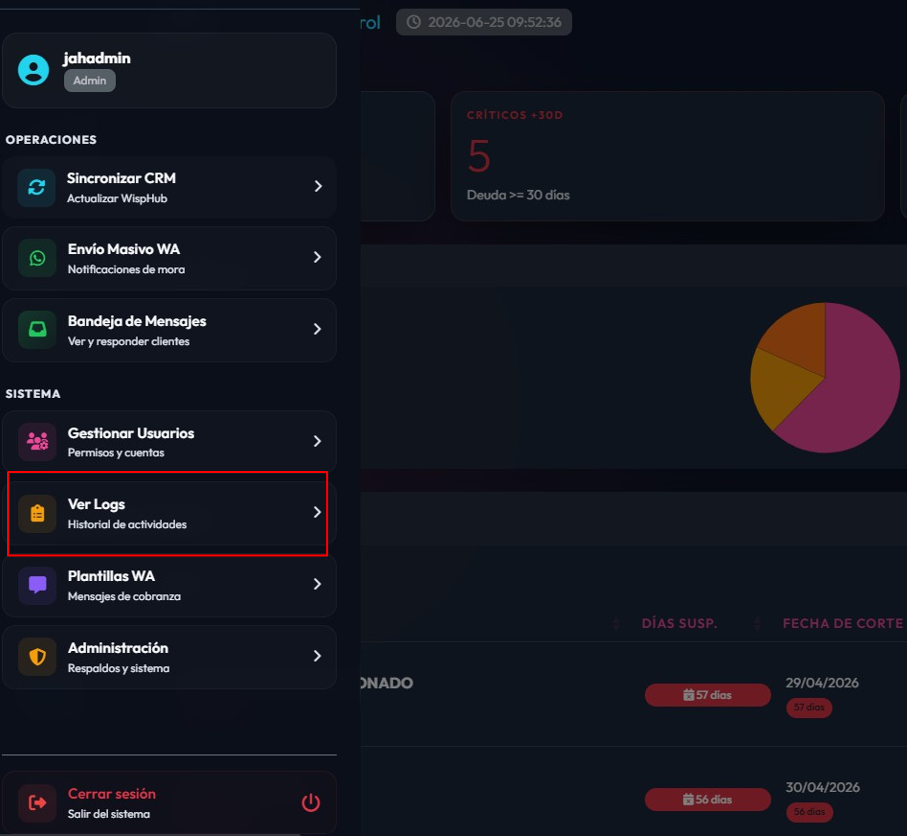
[Requiere: images/paycontrol/figura-8-0.png]
'">8.1 Información Registrada
- Usuario que realizó la acción.
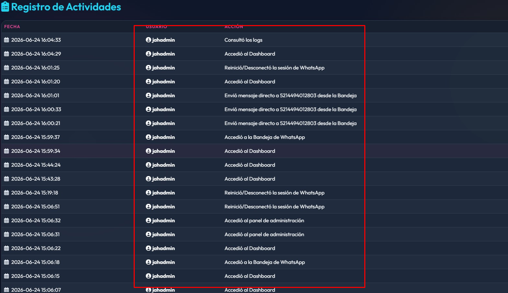
[Requiere: images/paycontrol/figura-8-1.png]
'">8.2 Acciones Auditadas
- Inicio y cierre de sesión.
- Sincronizaciones con WispHub.
- Envíos masivos de WhatsApp.
- Cambios de configuración del sistema.
- Creación y eliminación de usuarios.
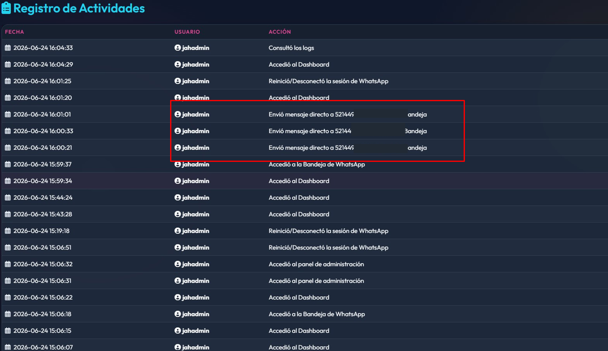
[Requiere: images/paycontrol/figura-8-2.png]
'">9. Seguridad y Buenas Prácticas
- No compartir las credenciales de
jahadmincon ningún integrante del equipo. - Cambiar la contraseña maestra al menos cada 90 días.
- Realizar respaldo de la base de datos cada semana.
- Mantener el delay de WhatsApp en 300 segundos (mínimo) para evitar bloqueos.
- Verificar el estado de la conexión WhatsApp antes de iniciar envíos masivos.
- En caso de error 429, esperar 10–15 segundos antes de reintentar.
- Utilizar el rol Demo/Sandbox para capacitación de nuevos usuarios.
- Revisar los Logs periódicamente para detectar acciones no autorizadas.
V. NetBox (CMDB)
Manual de Operación de la Fuente de Verdad para Infraestructura de Red
1. Panel Principal & Gestión de Sitios (Sites)
NetBox actúa como el sistema CMDB estructural de documentación de red. Al iniciar sesión, el Dashboard despliega una vista general del estado de la infraestructura: conteo de dispositivos por tipo, resumen de direccionamiento IP (IPAM), ocupación de racks y logs de las últimas modificaciones.
[Requiere: images/netbox/dashboard.png]
'">¿Cómo agregar un nuevo Sitio (Site)?
Los Sitios representan locaciones físicas geográficas precisas (Data Centers, Torres o Nodos de Distribución).
- En el menú lateral de navegación, despliegue
Organizationy haga clic enSites. - Haga clic en el botón azul superior derecho denominado + Add.
[Requiere: images/netbox/dashboard-sites.png]
'">- Complete los campos obligatorios del formulario: Name (Nombre del Sitio), Slug (Shorthand amigable único) y Status (marcar como Active).
- Opcionalmente, capture una descripción, variables de latitud/longitud y datos de contacto antes de presionar Save.
[Requiere: images/netbox/form-site.png]
'">2. Configuración de Fabricantes y Modelos de Hardware
Nota técnica: Antes de añadir dispositivos físicos al inventario, es obligatorio definir las marcas (Manufacturers) y las plantillas estructurales de hardware (Device Types).
2.1 Fabricantes (Manufacturers):
Representa las marcas comerciales de los equipos instalados en producción (ej. Cisco, Huawei, MikroTik, Ubiquiti, Ruijie).
- Navegue a
Devices›Manufacturers. - Pulse en + Add.
[Requiere: images/netbox/manufacturers-list.png]
'">- Ingrese el nombre del fabricante y una descripción opcional.
- Guarde con Save.
[Requiere: images/netbox/manufacturer-add.png]
'">2.2 Tipos de Dispositivos (Device Types):
Define la plantilla del modelo específico del equipo, incluyendo el número estandarizado de interfaces físicas, puertos y Unidades de Rack (U) de altura que consume.
- Navegue a
Devices›Device Types. - Haga clic en + Add.
[Requiere: images/netbox/devicetypes-list.png]
'">- Seleccione el fabricante, ingrese el modelo y el número de parte.
- Configure las interfaces y puertos del modelo.
- Guarde con Save.
[Requiere: images/netbox/devicetype-add.png]
'">3. Aprovisionamiento e Inventariado de Dispositivos (Devices)
Una vez creadas las plantillas de modelos, proceda al aprovisionamiento físico del hardware atornillado en los nodos.
- Navegue al módulo
Devices›Devices. - Pulse el botón verde + Add.
[Requiere: images/netbox/devices-list.png]
'">- Escriba el nombre único del dispositivo (ej.
SW-CORE-01). - Seleccione el Device Role o función de red (Switch, Router, OLT, Antena).
- Vincule el Device Type (fabricante y modelo del catálogo indexado).
- Asigne obligatoriamente el Sitio (Site) donde se encuentra operando el equipo.
- Complete de forma opcional el rack de montaje, la posición exacta, número de serie de fábrica y pulse Save.
[Requiere: images/netbox/device-add.png]
'">4. Gestión del Direccionamiento IP (Módulo IPAM)
El núcleo IPAM permite amarrar de manera exacta direcciones de red IPv4/IPv6 a las interfaces de los dispositivos.
¿Cómo asignar una dirección IP a una interfaz?
- Navegue a
IPAM›IP Addresses. - Haga clic en + Add.
[Requiere: images/netbox/ip-list.png]
'">- Ingrese la dirección IP en formato CIDR (ej.
192.168.1.1/24). - Seleccione el Status en el que se encuentra (Active, Reserved, Deprecated).
- Busque el dispositivo y seleccione la interfaz correspondiente.
- Guarde con Save.
[Requiere: images/netbox/ip-add.png]
'">5. Registro de Conexiones Físicas (Cables)
Permite documentar las interconexiones l1 de fibra, radioenlaces o par de cobre punto a punto entre la infraestructura.
¿Cómo registrar una conexión entre dispositivos?
- Abra el dispositivo origen desde
Devices›Devices. - Haga clic en la pestaña "Interfaces".
- Junto a la interfaz deseada, haga clic en el ícono de cable (🔌).
[Requiere: images/netbox/cables-interfaces.png]
'">- Seleccione el tipo de cable (CAT5e, CAT6, Fibra, DAC, etc.).
- Busque y seleccione el dispositivo y la interfaz destino.
- Opcionalmente, ingrese el color, longitud y etiqueta del cable.
- Haga clic en Save.
[Requiere: images/netbox/cables-form.png]
'">6. Gestión de Gabinetes (Racks) y Control de Acceso (RBAC)
6.1 Creación y Gestión de Racks (Gabinetes):
Mapea la distribución en espacio de los nodos.
¿Cómo crear y gestionar un rack?
- Navegue a
DCIM›Racks. - Haga clic en + Add.
[Requiere: images/netbox/rack-list.png]
'">- Asigne un nombre descriptivo al rack (ej.
RACK-DC-01). - Seleccione el Sitio donde está ubicado.
- Ingrese las dimensiones: altura en U, profundidad y ancho.
- Guarde con Save.
- Para agregar dispositivos al rack, edite cada dispositivo y asigne el rack y la posición en U.
[Requiere: images/netbox/rack-form.png]
'">6.2 Administración de Usuarios y Privilegios (Seguridad):
NetBox permite controlar el acceso a la plataforma mediante usuarios, grupos y permisos granulares. El administrador puede definir exactamente qué puede ver y modificar cada usuario según su rol.
Tipos de acceso disponibles:
- Administrador (Staff): acceso total a todas las funciones.
- Operador de red: puede agregar y modificar dispositivos e IPs.
- Solo lectura: puede consultar el inventario sin modificarlo.
- Personalizado: permisos configurados por módulo específico.
¿Cómo crear un usuario?
- Navegue a
Admin›Users(requiere acceso de administrador). - Haga clic en + Add.
[Requiere: images/netbox/users-list.png]
'">- Complete el nombre de usuario, correo electrónico y contraseña.
- Asigne el usuario a los grupos correspondientes.
- Configure los permisos individuales si es necesario.
- Guarde con Save.
[Requiere: images/netbox/user-form.png]
'">VI. Zabbix
Manual de Operación, Monitoreo y Diagnóstico — JAH WIFI
Manual de Operación de Zabbix
Este manual proporciona una guía detallada para la operación, monitoreo y diagnóstico de la infraestructura de red utilizando la plataforma Zabbix. Este documento está diseñado exclusivamente para el personal técnico encargado de la supervisión de los equipos y enlaces de red.
1. Interfaz y Navegación
El menú lateral de Zabbix permite el acceso a las funciones principales. Asegúrese de familiarizarse con los módulos de "Monitoring" para la visualización en tiempo real y "Data collection" para la gestión física de los dispositivos.

2. Gestión de Inventario (Hosts)
Para visualizar el estado de salud de los equipos de core y distribución (MikroTik/Cisco), acceda a la sección de hosts. Utilice los filtros avanzados para buscar por grupo, dirección IP, nombre de equipo o severidad, permitiendo identificar rápidamente dispositivos con problemas o alarmas activas.
[Requiere: images/zabbix/hosts-list.png]
'">3. Vista de Topología
La plataforma cuenta con un mapa interactivo para el reconocimiento lógico de las dependencias. Un estado de color dinámico ayuda al operador en el triaje preliminar frente a eventos de caídas en cascada. Un estado "OK" en color verde indica conectividad operativa ideal. Cualquier cambio de color o variación de icono en los nodos requiere investigación inmediata por el técnico en turno.
[Requiere: images/zabbix/topology-map.png]
'">4. Dashboards de Consumo
Zabbix centraliza el monitoreo de tráfico a través de dashboards de alta densidad de datos personalizados. Utilice los dashboards específicos según el tipo de segmento a auditar:
- Consumos Dedicados: Diseñado para analizar el ancho de banda histórico y actual en interfaces WAN dedicadas (ej. Ebenezerred, San Diego Zacatecas, Alamo Juan Rosales).
- Consumos STRIN: Panel analítico de tráfico enfocado en subredes de distribución agregadas y enlaces troncales (ej. Strin Teocal - Nochistlán, Totales La Chona).

[Requiere: images/zabbix/consumos-strin.png]
5. Diagnóstico de Interfaces
Para verificar el estado específico y el rendimiento por puerto de las interfaces físicas o lógicas (SFP, Bonding, Ethernet), utilice la vista avanzada de "Latest data" filtrada rigurosamente por host. Esto permite confirmar si un enlace se encuentra en estado "up" (1) o "down" (2) en tiempo real junto con el tiempo transcurrido desde su última verificación.
[Requiere: images/zabbix/latest-data.png]
'">6. Salud del Servidor Zabbix
Es indispensable monitorear el rendimiento del propio servidor Zabbix mediante el dashboard de telemetría interna "Zabbix server health". El operador debe vigilar de manera permanente las siguientes métricas críticas para asegurar que el sistema de monitoreo no presente latencias operativas o pérdida de payloads:
- Values processed per second: Cantidad de variables telemétricas procesadas e indexadas por el motor por segundo.
- Cache usage: Niveles de memoria RAM consumida por los buffers del despachador interno.
- Queue size: El tamaño de la cola de elementos en espera de verificación; un incremento anómalo representa retrasos de red o hosts caídos.